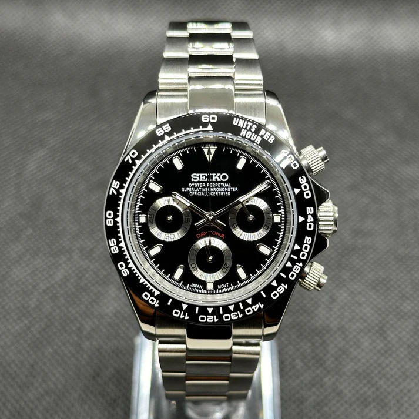
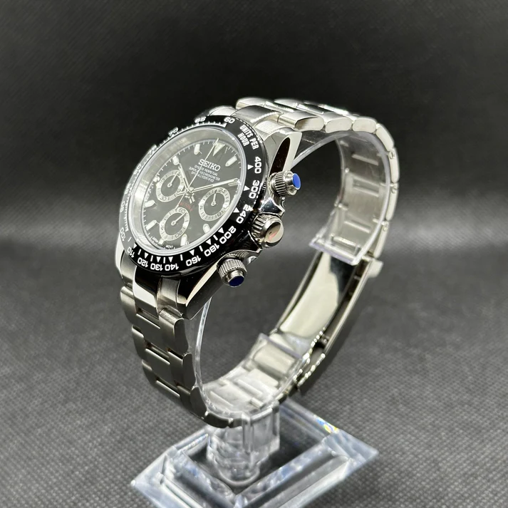
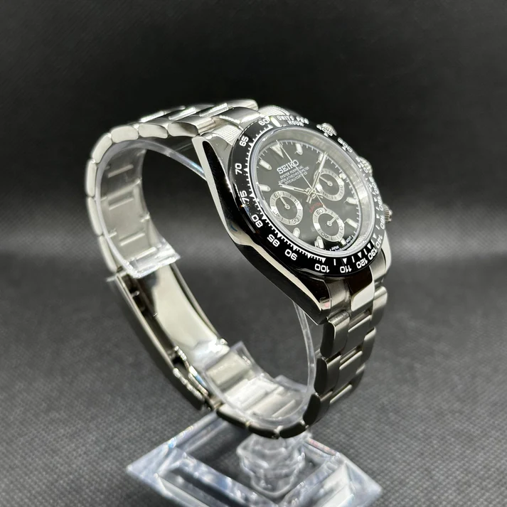
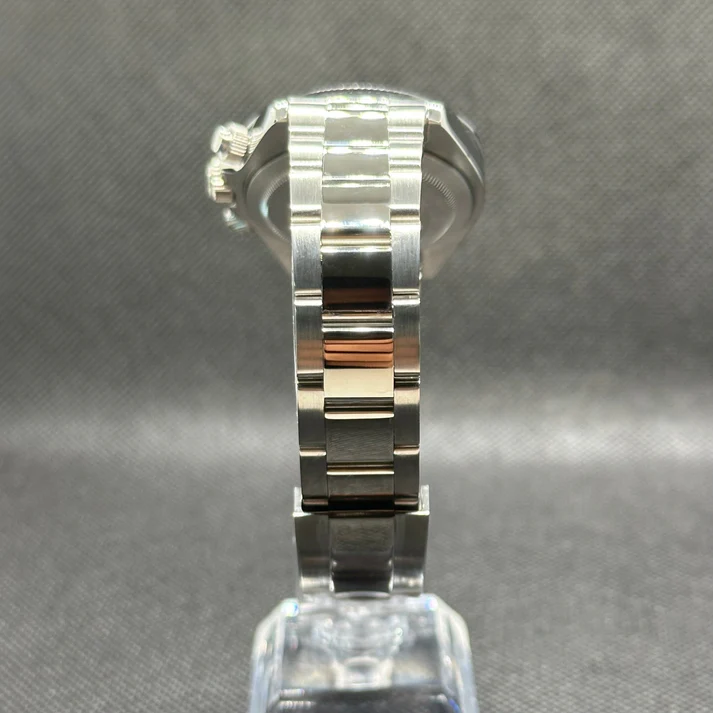

Relojes únicos con corazón Seiko
¡IMPORTANTE! ACTUALMENTE LA WEB ESTA EN DESARROLLO TODOS LOS DATOS ACTUALES SON DE PRUEBA MUCHAS GRACIAS
Cada pieza está ensamblada a mano, combinando la fiabilidad de un movimiento Seiko con un diseño exclusivo y personal.




La Confianza de mis Clientes
Mi reputación como Vendedor Top en Wallapop se basa en la seriedad y la satisfacción de cada persona que ha confiado en mi trabajo.